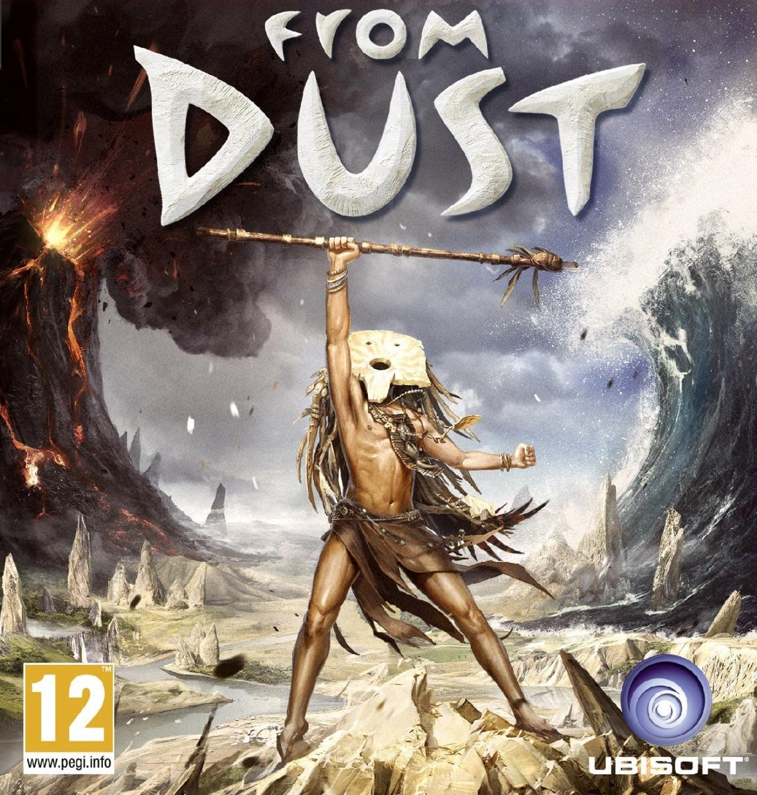
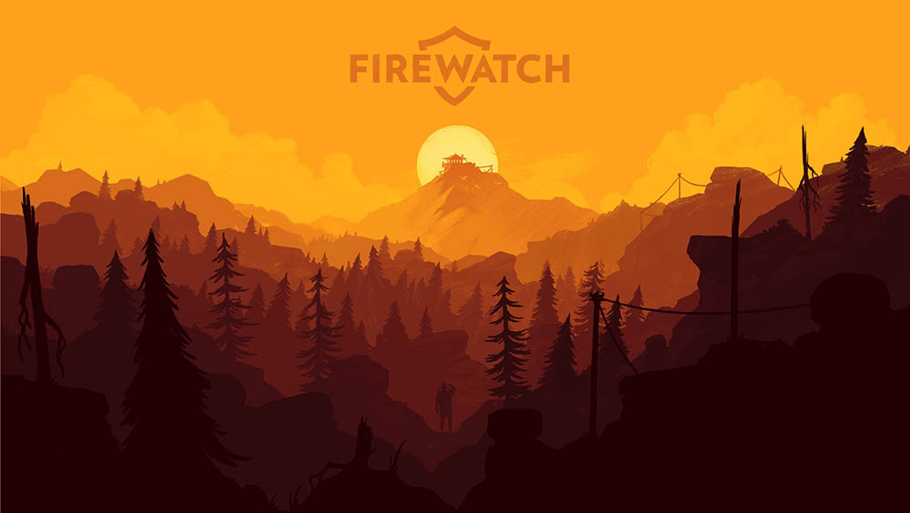
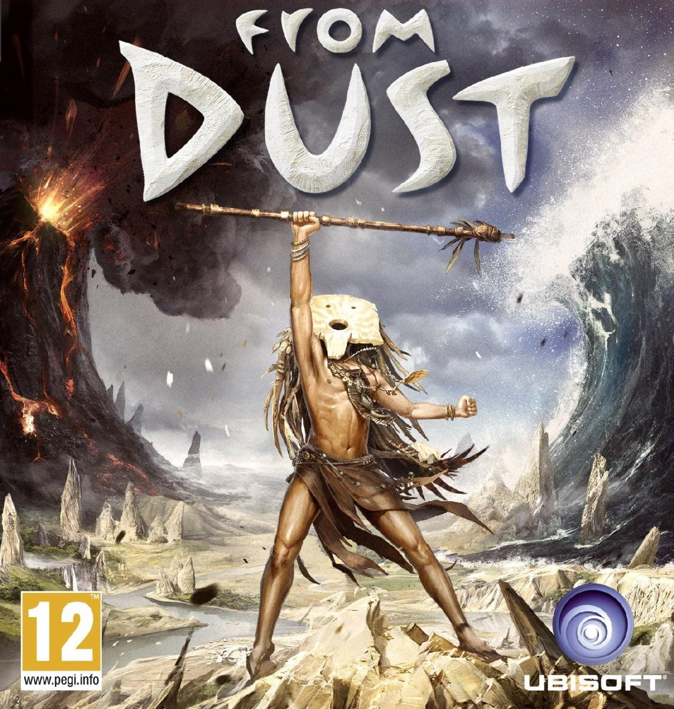
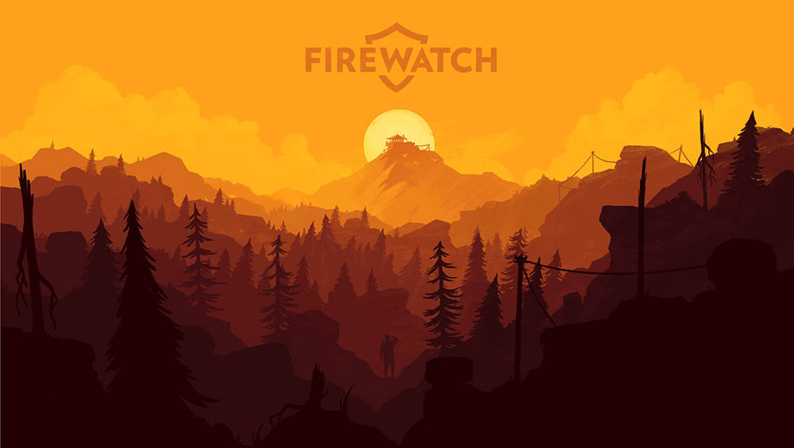
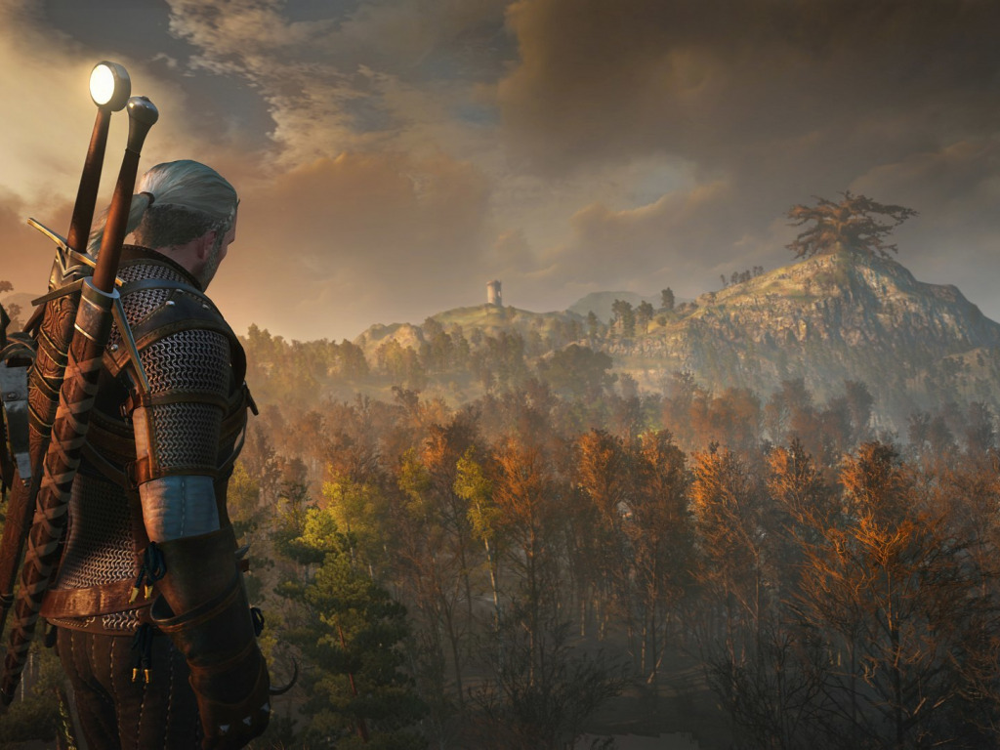
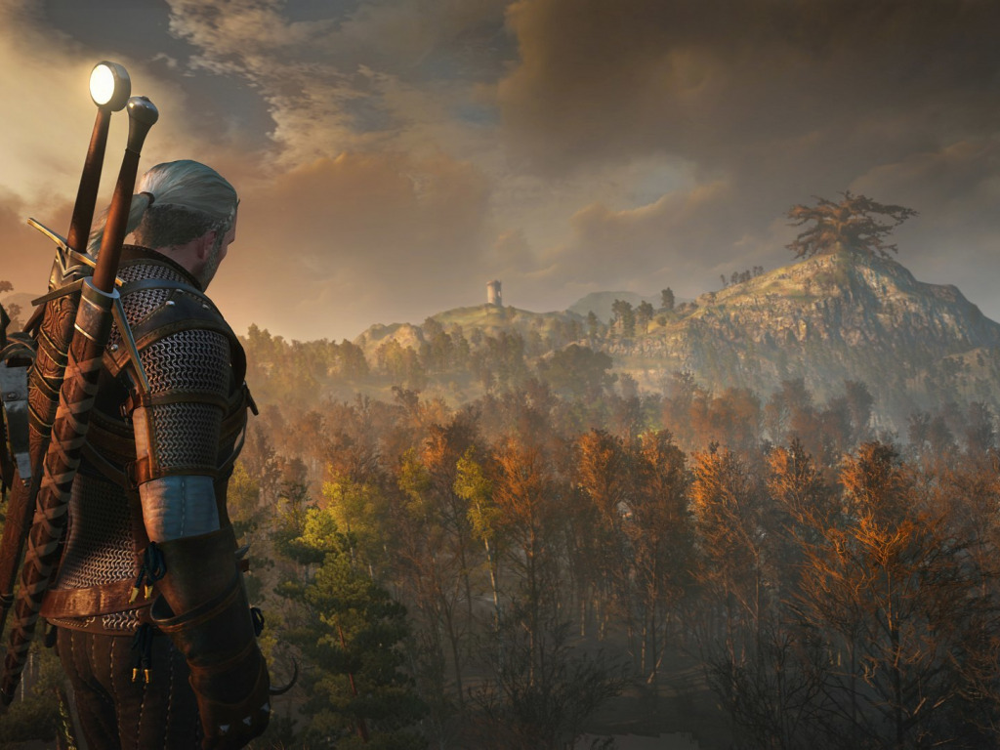

Жанры
Игровой жанр -
это название определённой категории игр
которое говорит о том что будет в игре.
Вот их список:
Action, Шутеры, Файтинги, Аркады
Симуляторы, Стратегии, Adventures
Головоломки, RPG
Игровой жанр -
это название определённой категории игр
которое говорит о том что будет в игре.
Вот их список:
Action, Шутеры, Файтинги, Аркады
Симуляторы, Стратегии, Adventures
Головоломки, RPG
Action - жанр компьютерных игр,
в котором делается упор
на эксплуатацию
физических возможностей игрока,
в том числе координации глаз и рук и скорости реакции.


Шутеры - это игры,
в которых геймплей часто сводится
к нахождению выхода
из лабиринта и уничтожению толп противника.


Файтинги - компьютерные игры,
имитирующие рукопашный бой малого
числа персонажей в пределах
ограниченного пространства или арены.
Аркады - это
компьютерные игры, характеризующиеся коротким по времени,
но интенсивным игровым процессом.
Симуляторы - компьютерные игр,
где основой геймплея является
наиболее подробная имитация
какого либо действия.
Стратегии - это жанр,
в котором залогом достижения победы является
планирование
и стратегическое мышление.


Adventures(приключения) - один
из основных жанров компьютерных игр,
представляющий собой
интерактивную историю с главным героем, управляемым игроком.
 



Головоломки - это компьютерные игры,
целью которых является решение
логических задач, требующих от игрока
задействования логики, стратегии и интуиции.
RPG - это
компьютерные игры, основанные на элементах игрового
процесса традиционных
настольных ролевых игр.
 
